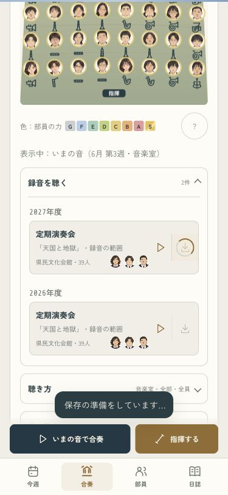
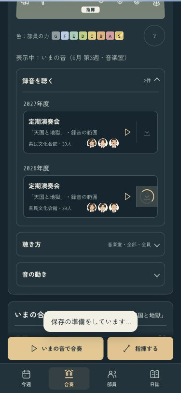

B · 保存の操作
保存中の一曲を、見失わない。
完了するまで次の保存を重ねず、保存中の録音を金の印で示します。失敗したときは、同じボタンからやり直せます。


375pxの実ゲーム。端末への受け渡しは確認用です。iPhoneの共有画面は未確認です。
B · 保存の操作
完了するまで次の保存を重ねず、保存中の録音を金の印で示します。失敗したときは、同じボタンからやり直せます。


375pxの実ゲーム。端末への受け渡しは確認用です。iPhoneの共有画面は未確認です。